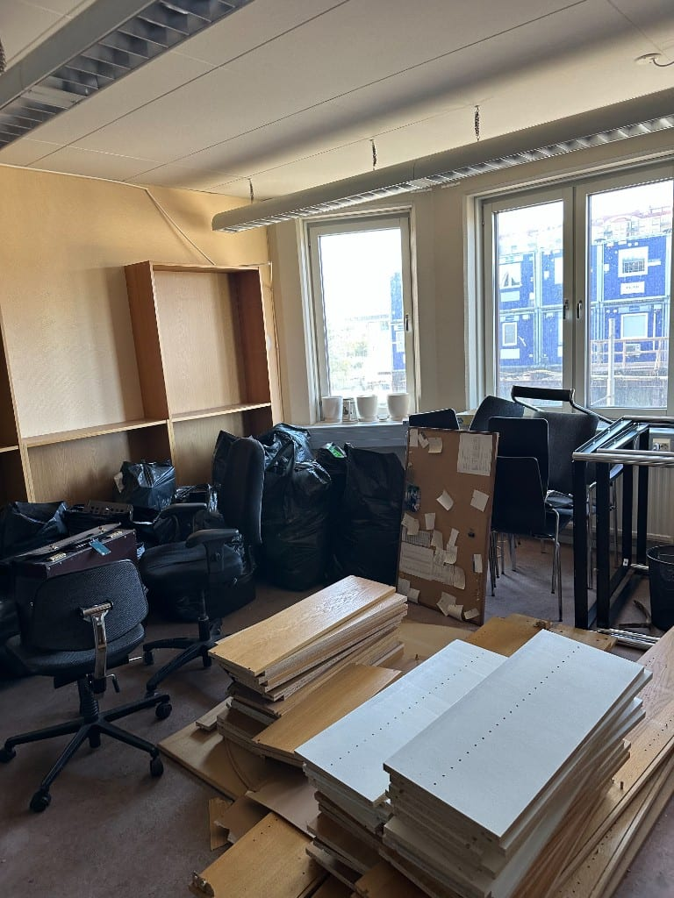
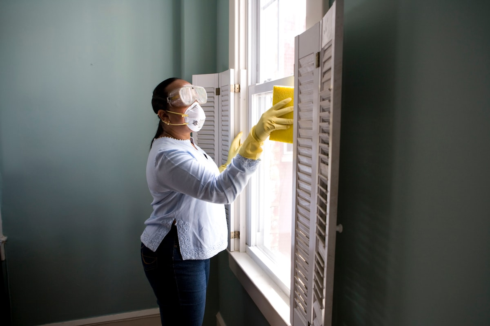
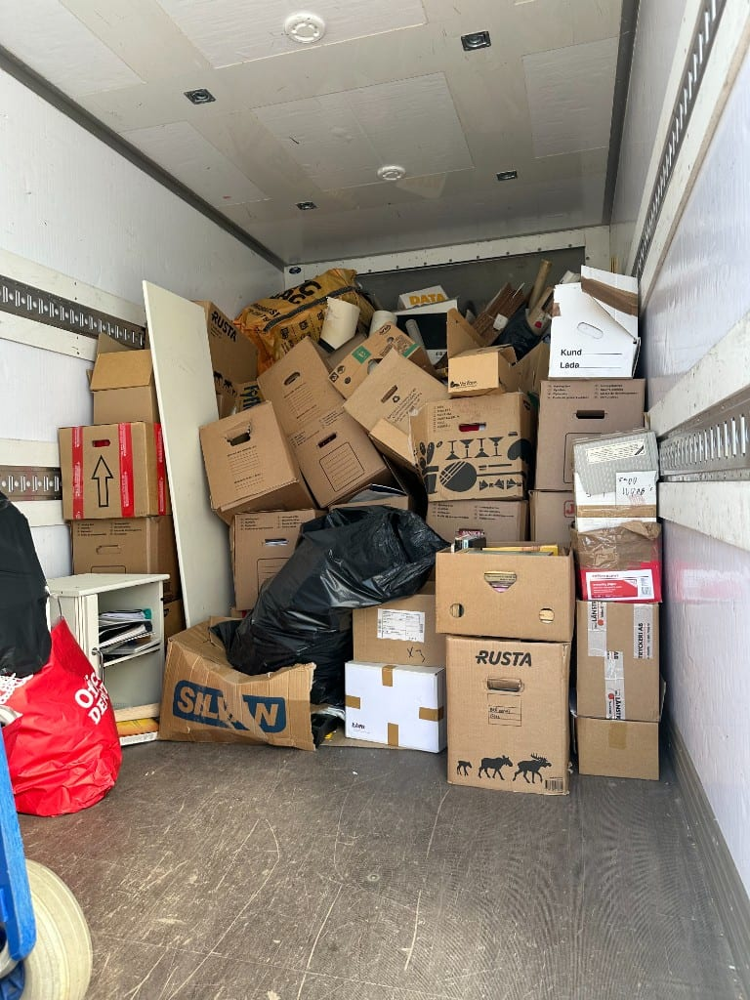

BRF & bostadsrättsföreningar
Miljörum, innergårdar och gemensamma utrymmen – planerade städdagar och akut hämtning.
Tjänst · Göteborg
Slut på överfulla miljörum och dumpade möbler på innergården. Snabb, prisvärd hämtning från dörr eller föreningslokal.
Översikt
Grovsopor är skrymmande avfall som möbler, madrasser, vitvaror och större kartonger – sådant som inte får plats i vanliga sopkärl. Vi hämtar från dörr, innergård eller föreningslokal utan att du eller styrelsen behöver bära tungt.
För BRF:er erbjuder vi planerade städdagar och akut hämtning när miljörum overflowar. För privatpersoner är det ett enkelt alternativ till hyrbil och tunga lyft – fast pris och miljövänlig sluthantering ingår.

Tjänster
Flexibel hämtning för föreningar, hyresvärdar och privatpersoner.

Miljörum, innergårdar och gemensamma utrymmen – planerade städdagar och akut hämtning.

Sängar, soffor och skåp – utan att du lyfter själv eller hyr bil.

Årlig föreningsstädning med fast schema och volymbedömning i förväg.

När miljörumet overflowar eller möbler dumpas – snabb lösning samma vecka.
Läs merProcess
Enkel bokning – från förfrågan till hämtad och sorterad avfall.
Beskriv volym via telefon eller skicka bilder – vi ger snabb bedömning.
Fast pris och bokad hämtning – anpassat efter BRF-regler eller privat tillgänglighet.
Vi bär och lastar – ni slipper tungt arbete och hyrbil.
Material klassificeras för maximal återvinning via vår hub.
Godkänd mottagning – dokumentation till styrelsen vid behov.
Situationer
När grovsopshämtning är rätt lösning i Göteborg.
Boende har lämnat skrymmande avfall – vi hämtar snabbt och återställer ordning.
Innergård fri på 2 timmar
Planerad hämtning efter städdag – fast schema och volymbedömning i förväg.
Gamla möbler och vitvaror – vi hämtar från dörr utan att du bär själv.
Hyresvärd eller styrelse behöver snabb lösning – vi dokumenterar hanteringen.
Transparent prissättning
Fast pris baserat på volym och typ av material. BRF:er kan få avtal för planerade städdagar – privatpersoner får offert efter kort beskrivning eller bilder.
Begär offert för grovsoporTrygg partner
Vi är göteborgare som förstår Göteborg. Med över 14 års erfarenhet, hundratals avklarade tömningar och hög kundnöjdhet erbjuder vi en komplett lösning – från tömning till återvinning. Vi är fullt ansvarsförsäkrade och har jour dygnet runt vid akuta behov.
Resultat
Utmaning: Innergård full av möbler, madrasser och kartonger efter städdag – klagomål från boende.
Lösning: Två fordon och team på plats – systematisk sortering och snabb lastning.
Innergård fri på 2 timmar – styrelsen sparade tid och undvek konflikter.
Utmaning: Soffa, säng och vitvaror efter renovering – ingen hiss i huset.
Lösning: Bärhjälp från tredje våningen, lastning och transport till återvinning.
Allt bortforslat samma dag – fast pris utan överraskningar.
Hela kedjan
En miljövänlig process där inget lämnas åt slumpen – transport och sluthantering ingår.
Sortering på plats
Säker lastning
Certifierad mottagning
Slutlig hantering
Löpande samarbete
För organisationer med återkommande behov erbjuder vi löpande avtal – schemalagd hämtning av grovsopor, utrymning mellan hyresgäster med kort varsel eller regelbunden röjning av gemensamma utrymmen. En fast kontaktperson, tydlig dokumentation efter varje uppdrag och fakturering enligt avtal.
Vi går igenom fastigheten eller lokalerna, volymer och önskad frekvens – utan kostnad.
Tydligt pris per tillfälle eller per period, inklusive transport och hanteringsavgifter.
Fullt ansvarsförsäkrade, cirka 98 % återvinningsgrad och underlag för styrelsens eller företagets uppföljning.
Som avtalskund prioriteras ni vid akuta behov – ofta inom 24–48 timmar.
För föreningar erbjuder vi även tömning av källare och vindsförråd, röjning av hela fastigheter och löpande bortforsling av grovavfall. Begär ett avtalsförslag för er BRF.
FAQ
Skrymmande hushållsavfall som möbler, madrasser, vitvaror och större kartonger som inte får plats i kärl.
Ja, vi erbjuder avtal och planerade städdagar för BRF:er – med volymbedömning och fast pris.
Ja, vi hämtar från innergård, miljörum, källare eller direkt från lägenhet.
Priset beror på volym och typ – fast offert efter beskrivning eller bilder.
Mer hjälp
Områden
Få en kostnadsfri offert inom 1–5 minuter. Inga dolda avgifter.